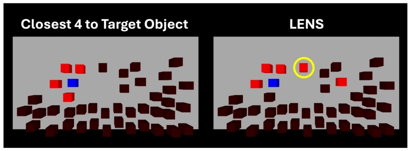
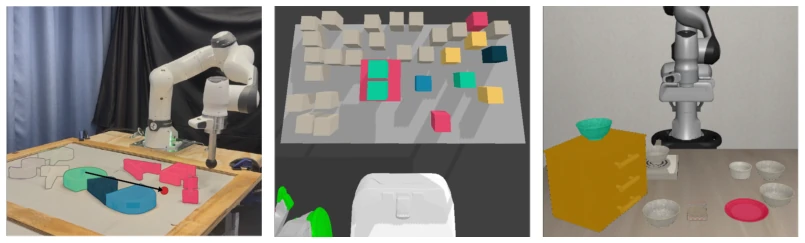
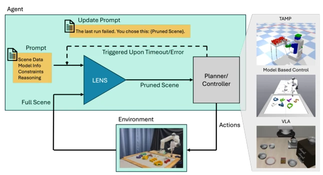
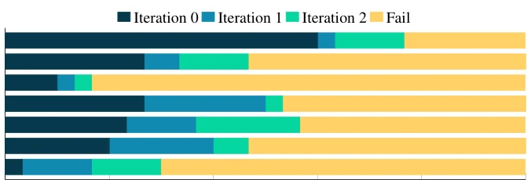

The 'large model filtering' approach of LENS is quite interesting, forcibly compressing the complex physical world into a 'minimalist mode' required by the task. Unlike some papers that boast end-to-end methods can handle everything universally, it pragmatically adds a 'semantic prefix' to existing planners. The benefit is strong generalizability; TAMP, MPC, and VLA can all be integrated; the downside is that the VLM itself is also a black box, with hallucination and latency issues not eradicated. Closed-loop feedback still relies on triggering via timeout or errors, representing a 'mending the fold after the sheep are lost' approach rather than 'preparing for rain before it comes'. For systems pursuing real-time performance, a 1.76-second query time may be somewhat costly, but in high-clutter scenarios, this cost is worth it, at least superior to manual parameter tuning.
Robots in the real world are often deterred by 'clutter'. TAMP methods [1] suffer from computational explosion as the number of objects increases, as they must traverse all decision branches; VLA models [4], while clean in the training set, experience distribution shift when encountering dense interference during deployment, leading to failed action predictions. Existing solutions either rely on manually written heuristic rules or maintain full scene modeling, lacking the ability for dynamic semantic abstraction. LENS attempts to replace manual engineering with LLM common sense reasoning to solve the fundamental problem of 'irrelevant objects interfering with decisions', allowing the planner to focus only on 'useful' parts, thereby bridging the gap between the laboratory and the real world.

Figure 9: Example TAMP scene where a distance-based baseline fails. The set of nearest objects to the goal (highlighted) fails to include a critical blocking object further away (circled yellow), which must be removed to enable a successful approach to the target. LENS identifies the blocker as task-relevant.
The core is LLM-driven closed-loop scene simplification. Inputting task descriptions and scene data, the VLM outputs a structured abstract scene ˜O. Operations are divided into two categories: Pruning directly removes irrelevant objects, reducing decision variables; Merging merges functionally coupled objects (such as stacks) into a single rigid body, reducing the number of contact pairs while retaining a conservative physical envelope. The system supports three backends: TAMP, C3+, and VLA. In TAMP, merging requires physical stability; in C3+, loose stacks can be merged; in VLA, interference is removed via image inpainting. If downstream execution fails (timeout/error), feedback information is appended to the Prompt to re-query the VLM, achieving dynamic correction. In specific implementation, TAMP uses PDDLStream to define decision variables, C3+ reduces linear complementarity problem dimensions, and VLA directly filters visual input.

Figure 1: Scene complexity is reduced via pruning and merging. (Left) The control task is to move the green “G” (green) to a target location. LENS identifies that the “S”, “T”, and “R” (gray) can be ignored; the “A”, “E”, and “I” (pink) are relevant, but can be thought of as a single object (merged); the “P” (dark blue) and “D” (light blue) are relevant and must be modeled. (Middle) for a TAMP problem, the robot must pick and move the three green cubes. LENS identifies nearby objects as relevant, but prunes the vast majority (gray). (Right) Using a VLA, the green bowl must be moved to the red plate. Other bowls clutter the scene, but LENS identifies that they can be pruned from the observation before calling the VLA.

Figure 2: System overview of LENS. Given a task description via the full scene and prompt infor- mation, LENS (blue) prunes and merges objects to produce an abstracted scene, which is passed to the planner or controller (grey). When triggered, LENS revises its scene pruning. This approach generalizes to TAMP, model-based controllers, and VLAs.
Tested on three stacks: TAMP, C3+, and VLA. Under heavy clutter, TAMP success rate significantly improved, while baselines often timed out. C3+ experiments showed that as the number of objects increased, baseline runtime grew exponentially, whereas LENS remained constant (approximately 40-135 seconds), improving efficiency by an order of magnitude. VLA recovered performance in both simulation and real hardware; in hardware experiments, the success rate increased from 0 to 0.5+ after removing interference. Ablation studies indicate that feedback iterations can correct initial pruning errors, proving the effectiveness of dynamic abstraction. Additionally, compared against a distance-based geometric pruning baseline, LENS performed better in terms of semantic relevance, particularly in handling non-adjacent but critical obstacles.

Figure 10: C3+ distance-based pruning baseline (n=30). Nearest-3 objects or nearest objects in r radius are passed to C3+. LENS outperforms the heuristics by capturing task-relevant objects regardless of proximity.